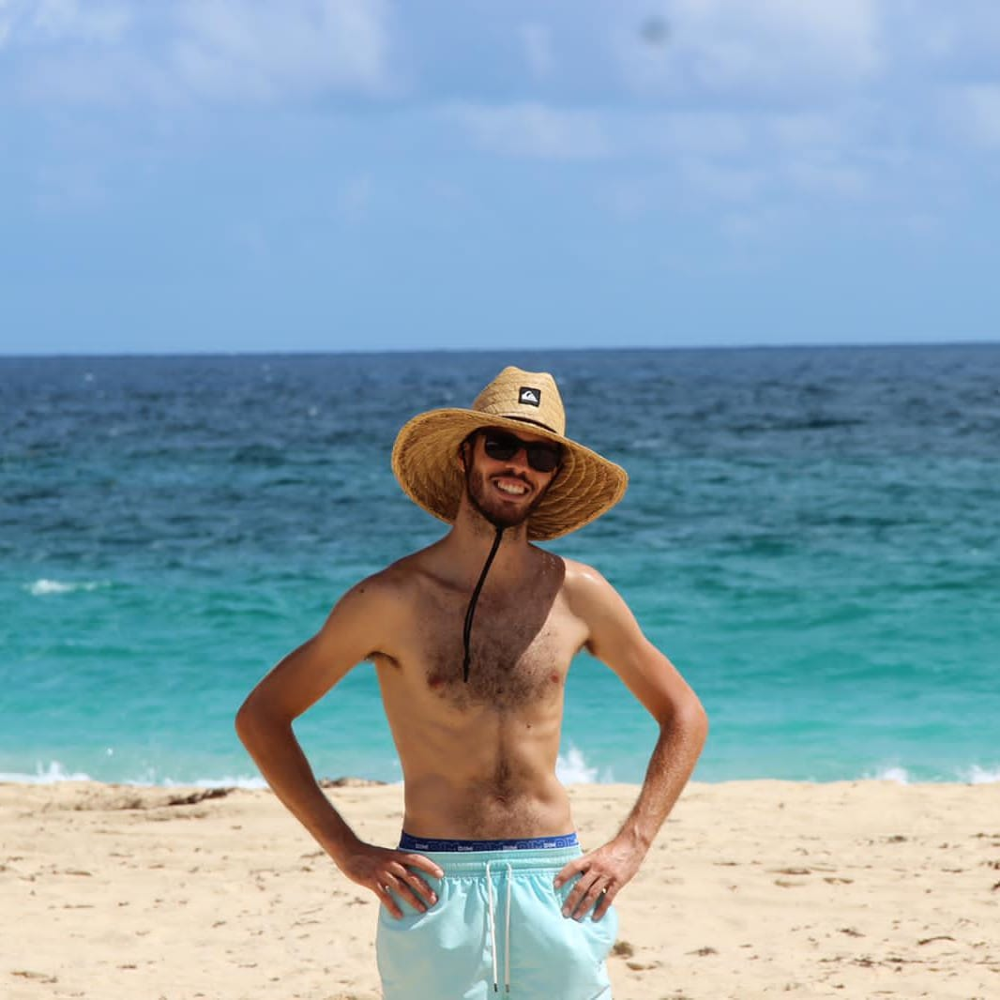

Bienvenue sur
le site officiel du
Saint Barth Beach Volley
Le
Saint Barth Beach Volley
a pour vocation la pratique du Beach-Volley et du Volley-Ball
sur le site de Saint-Jean mais aussi pendant des évènements tels
que les tournois locaux et inter-îles.
Une communauté de plus de 50 membres en seulement 1 an.
4
Tournois locaux par an
1
Grand évènement par an
3
Entrainnements hebdomadaire
En nous rejoignant vous décrouvrirez notre passion et notre implication dans ce sport.
Transmettre notre savoir, technique et envie est très important pour les nouveraux adhérents, vous recevrez toute l'aide dont chacun à besoin pour pouvoir prendre du plaisir lors de nos entrainnements et matchs.
Qui sommes-nous ?
Créateur de l'association
Le Saint Barth Beach Volley est une association officiellement créé le 2 Septembre 2022 par DUZANT Allan (à gauche) & ROMNEY Charles (à droite), elle a participé à de nombreux évènements tels que les fêtes de quartiers (Flamands, Public, Lorient et la Saint-Barthélemy).

Nouveau Président
Depuis Septembre 2023, elle a été reprise par PETER Ryan comme Président et a reformé un nouveau bureau dans le but de retrouver l'engouement du Beach-Volley durant les débuts des années 2000.
Bureau de l'association
Le bureau nouvellement refait est une équipe de 6 adhérents actifs et déterminés à raviver la flamme de l'époque glorieuse du Beach-Volley qui s'est éteint il y a quelques années.
-
Ryan PETER
(Président) -
Manoel LEDEE
(Vice-Président)
-
Gery SEINTURIER
(Trésorier) -
Aurélien AUBIN
(Vice-Trésorier)
-
Pauline MARIE-LOUISE
(Secrétaire) -
Alexandra SEINTURIER
(Vice-Secrétaire)
Nos adhérents
Si nous faisons tous ces efforts c'est bien évidemment pour que nos adhérents puissent apprendre et prendre du plaisir chez nous pour garder de bon souvenir. IL FAUT RAJOUTER DU TEXTE.

Parce qu'avec nous, vous prendrez plaisir non seulement au Beach-Volley mais aussi au Volley-Ball.
Le bureau ne cesse d'innover pour vous faire découvrir de nouvelles chose. Le 6vs6 sera bientôt mis en place en partenariat avec l'AJOE à Lorient pour que tout le monde y trouve son compte.
Que faisons-nous ?
Ou pratiquons-nous ? ?
Grâce à la Collectivité de Saint-Barthélemy nous pouvons pratiquer le Volley à de nombreux endroits tels que les nombreuses plages, la plaine des jeux de Saint-Jean ou encore le terrain de l'AJOE
Plaine des Jeaux de Saint-Jean
Le site de Saint-Jean est composé de 4 terrains ainsi que des vestiaires (douches & WC).
Terrain de l'AJOE
Le terrain de l'AJOE est constitué d'un terrain unique pour le Volley-Ball, il se situe à Lorient
Plages de Saint-Barthélemy

Saint-Barthélemy possède 16 plages utilisables pour la pratique du Beach-Volley
Quel type de volley ?
Beach-Volley
Le Beach-Volley est la raison de notre association, nous le pratiquons partout et organisons des tournois souvent pour faire partager notre passion à toute la population.
La photo sur la droite a été prise lors de notre tournoi organiser pour la fête de Public durant l'été 2023.

Volley-Ball
Actuellement nous attendonds toujours les travaux de l'AJOE pour la réhabilitation de l'ancien terain de Volley-Ball à Lorient. Cependant cela ne nous empêche pas de pratiquer le Volley-Ball en 3vs3 sur les plages.
La photo sur la droite a été prise lors du tournoi de la Saint-Barthélemy le 24 Août 2023

Avoir une visibilité est important pour une assocaition comme nous, c'est pour cela que nous organisons des évènements.
Ces évènements peuvent être locaux, inter-îles et notre objectif ultime est de faire de Saint-Barthélemy la plaque tournante du Beach-Volley dans le monde.
Quels sont nos évènements ?
Fêtes de quartiers
BLA BLA BLA BLA
Nuit du Beach-Volley
BLA BLA BLA BLA
Tournoi des îles du Nord
BLA BLA BLA BLA
OPEN Inter-îles
BLA BLA BLA BLA